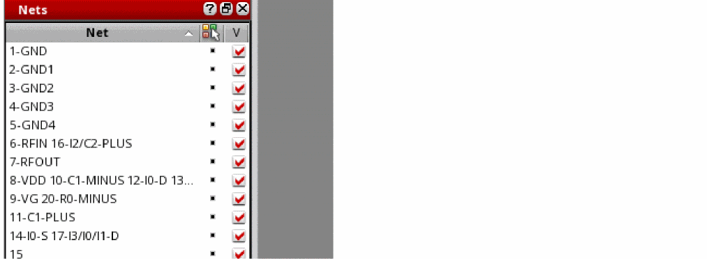
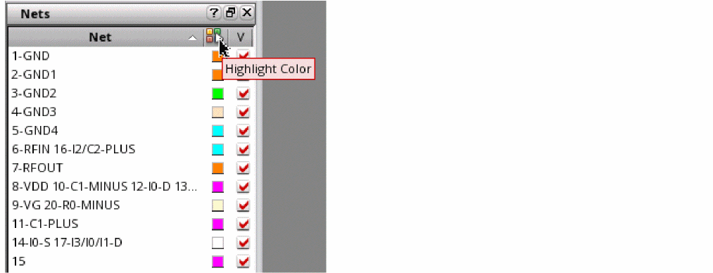

Nets Assistant
The Nets assistant lets you manage the visibility of nets and the metal islands electrically connected to them. When you open a mesh, the Nets assistant is displayed by default, docked below the Layers assistant.

The Nets assistant displays a list of nets connected to the shapes selected for the model. Use the check box to the right of each net to control the visibility of that net and the metal islands connected to it.
This assistant also lets you color the nets and the shapes connected to them in two modes:
-
Use layer color: (Default) Uses the color of the layer on which the net is placed. In this mode, the color icon against each net is switched to layerColor mode.
 -
Use net color: Uses a unique color for each net and the metal island connected to it. To enable this mode, click Highlight Color in the column header.
The 3D Viewer assigns a unique color to each net and displays that color next to the net name in the assistant. If all the available colors are used, some nets will be assigned the same colors. You can control the visibility of ports by selecting or deselecting the corresponding Visibility check box. The ports selected in the assistant are highlighted in red on the canvas.
The color of the metal islands is also changed to match the color of the connected net.
Return to top